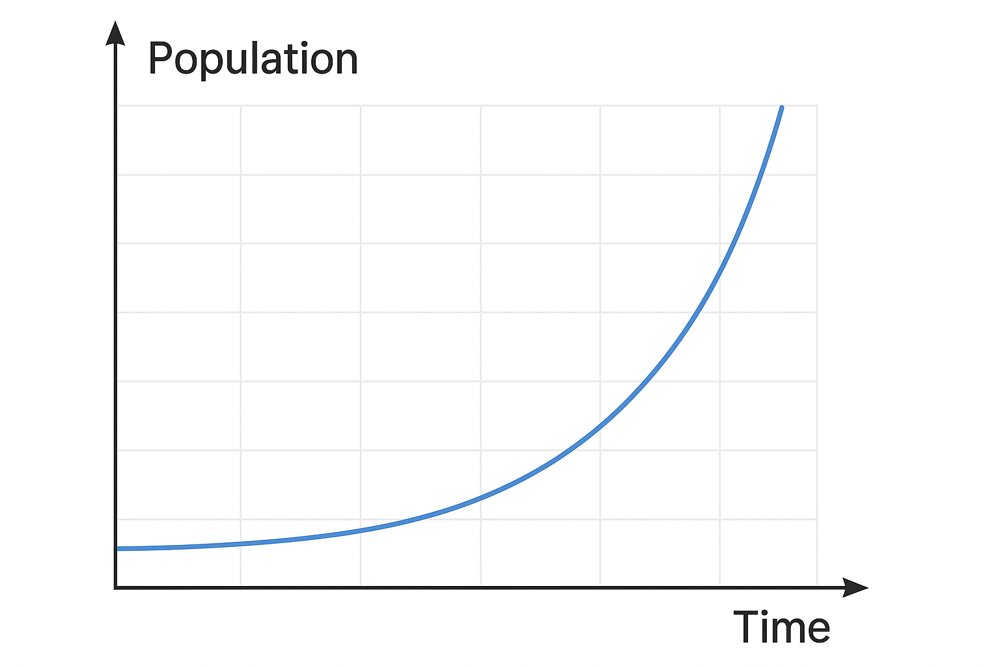
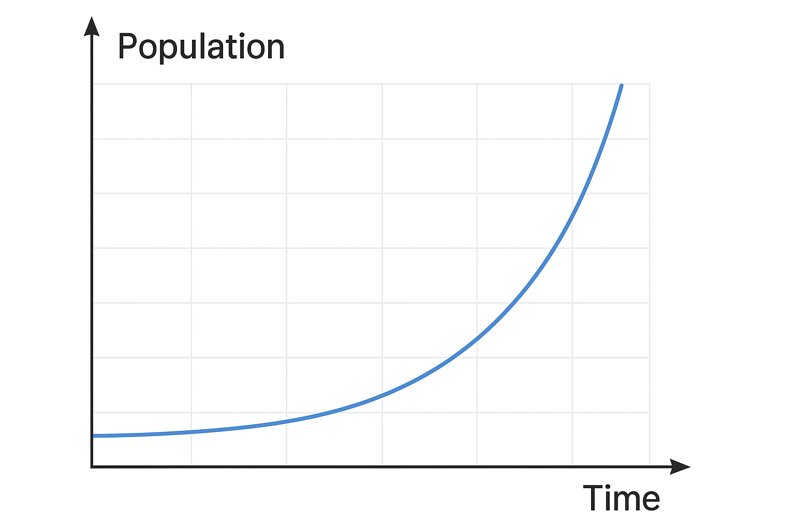

1. Presentación
Introduce el proyecto, el objetivo general y la importancia de estudiar el crecimiento de la población bacteriana en contexto biológico y sanitario.
Serie de videos educativos animados que explican el crecimiento de la población bacteriana mediante ecuaciones diferenciales, usando animación digital para hacer el aprendizaje más visual, claro y atractivo.
Ver presentación del proyecto 

Este proyecto productivo consiste en una serie de videos educativos animados que explican el crecimiento de la población bacteriana usando modelos basados en ecuaciones diferenciales. El objetivo es acercar a los estudiantes a conceptos matemáticos y biológicos de manera visual, guiada y amigable.
La idea surge a partir de una presentación de diapositivas sobre crecimiento de población bacteriana. A partir de ese material teórico se diseña una propuesta que combina animación digital con explicaciones claras para facilitar la comprensión paso a paso.
El resultado es un recurso audiovisual completo que puede utilizarse en clases, laboratorios virtuales o estudio autónomo, reforzando la relación entre la teoría matemática y los procesos biológicos reales.
El proyecto se organiza en ocho videos animados que recorren el tema desde la motivación inicial hasta las conclusiones, integrando la parte biológica y matemática.
Introduce el proyecto, el objetivo general y la importancia de estudiar el crecimiento de la población bacteriana en contexto biológico y sanitario.
Presenta conceptos básicos sobre bacterias, población, tiempo y variables relevantes para construir el modelo de crecimiento.
Revisa los tipos de crecimiento poblacional, con énfasis en el comportamiento exponencial y las limitaciones reales de los sistemas biológicos.
Explica por qué las ecuaciones diferenciales son una herramienta adecuada para modelar cambios continuos en la población bacteriana a lo largo del tiempo.
Detalla el modelo elegido (por ejemplo, crecimiento exponencial o logístico), definiendo parámetros, condiciones iniciales y significado biológico de cada término.
Presenta un ejemplo aplicado donde se resuelve una ecuación diferencial asociada al modelo y se interpreta el resultado.
Compara distintos modelos y curvas de crecimiento, analizando semejanzas, diferencias y adecuación a escenarios reales.
Cierra el recorrido resumiendo aprendizajes clave sobre el uso de ecuaciones diferenciales y el aporte de la animación digital en la enseñanza del tema.
El crecimiento de la población bacteriana describe cómo varía el número de bacterias en función del tiempo. En condiciones ideales, muchas poblaciones muestran un comportamiento similar al crecimiento exponencial: la velocidad de cambio es proporcional al tamaño actual de la población.
En la práctica, factores como nutrientes, espacio y respuesta del ambiente limitan este crecimiento. Para representar estos procesos de forma rigurosa, se utilizan ecuaciones diferenciales, que describen la relación entre la derivada de la población respecto al tiempo y la propia población.
En este proyecto, las ecuaciones diferenciales se presentan de forma gradual, conectando cada expresión matemática con una interpretación biológica concreta y apoyándose en animaciones que muestran cómo evoluciona la población en el tiempo.
Para modelar el crecimiento de una población bacteriana se pueden utilizar diferentes enfoques. Dos de los más habituales son el modelo exponencial y el modelo logístico.
Un modelo logístico, por ejemplo, incorpora una capacidad máxima del medio (capacidad de carga) y se expresa en una ecuación diferencial de la forma:
dN/dt = r · N · (1 - N/K)
N(t): tamaño de la población en el tiempo t
r: tasa intrínseca de crecimiento
K: capacidad de carga del medioLa solución de esta ecuación permite obtener una curva que crece rápidamente al inicio y luego se estabiliza cuando la población se acerca al valor K. Esta interpretación se refuerza con gráficos y animaciones que muestran la forma característica de la curva.
Dentro de la serie se plantea un ejercicio guiado donde se aplica el modelo seleccionado a un caso concreto de población bacteriana, partiendo de una condición inicial.
Una colonia bacteriana tiene una población inicial N(0) conocida y sigue una ley de crecimiento descrita por una ecuación diferencial del tipo elegida (exponencial o logística). Se busca determinar la expresión de N(t) y analizar el comportamiento de la población en un intervalo de tiempo dado.
La serie incluye una etapa dedicada a comparar modelos y resultados, fomentando la interpretación crítica de las curvas obtenidas.
Se contrastan curvas de crecimiento exponencial y logístico, destacando:
También se comparan los resultados teóricos con el ejercicio trabajado en la serie, observando:
El uso de ecuaciones diferenciales en biología permite describir y predecir el comportamiento de poblaciones en crecimiento de manera cuantitativa. En el caso de las bacterias, estos modelos ayudan a comprender dinámicas relevantes para la salud, la biotecnología y la investigación científica.
Al integrar animación digital en la explicación de estos modelos, se facilita la visualización de procesos que normalmente quedan ocultos en fórmulas y gráficos estáticos. Los estudiantes pueden observar la evolución de la población, los cambios de pendiente y la influencia de los parámetros de forma intuitiva.
Como proyecto productivo educativo, esta serie de videos aporta un recurso reutilizable y adaptable a distintos niveles académicos, potenciando el aprendizaje activo y la comprensión profunda del tema.
La animación digital es el eje central de este proyecto. A través de secuencias visuales cuidadosamente diseñadas, se representan procesos microscópicos, curvas de crecimiento y transformaciones en el tiempo que serían difíciles de imaginar solo con texto.
Este enfoque:
Al combinar narrativa, gráficos y ecuaciones, la animación digital se convierte en un puente entre la matemática formal y la realidad biológica, logrando una experiencia de aprendizaje más completa.